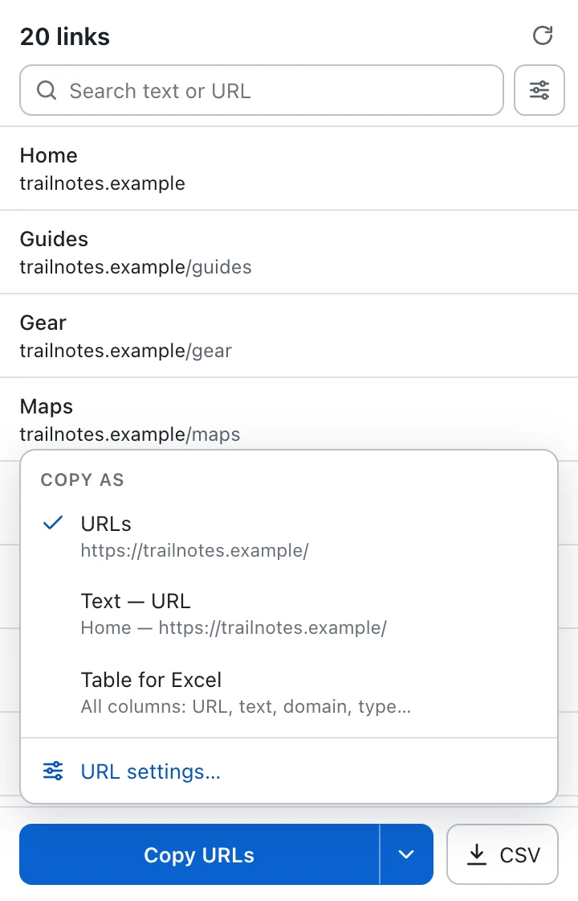

Risposta breve: apri la pagina, clicca l'icona di Link Extractor, apri il menu accanto a Copia URL e scegli Tabella per Excel. Incolla in Excel o Google Sheets: l'URL e il testo del link finiscono in colonne separate, una riga per link, nell'ordine della pagina.
A chi serve
A chi fa SEO e controlla i testi dei link (anchor text), a chi cura una redazione e prepara un elenco di fonti, e a chiunque abbia bisogno di sapere non solo dove porta una pagina, ma anche cosa dice ogni link.
Tre modi per avere insieme testo e URL
- Tabella per Excel (nel menu accanto a Copia URL): una tabella con una riga di intestazione (URL, testo, dominio, tipo e altro). Incollala in un foglio e si divide in colonne.
- Testo — URL (stesso menu): una coppia «testo — indirizzo» per riga, per un documento, un'email o una chat.
- CSV: un file con le stesse colonne, per quando vuoi conservarlo o aprirlo più tardi. Vedi come esportare i link in CSV per Excel.
URL nello stesso menu copia solo gli indirizzi, uno per riga.
Passo per passo
- Apri la pagina e clicca l'icona di Link Extractor (Alt+Shift+L, su Mac Ctrl+Shift+L).
- Facoltativo: restringi l'elenco con la casella di ricerca o con Filtri e impostazioni.
- Apri il menu accanto a Copia URL e scegli Tabella per Excel oppure Testo — URL.
- Incolla nel tuo foglio o documento.

Come si scelgono il testo e l'ordine
- Il testo è quello che vedi sul link, con spazi in eccesso e interruzioni di riga ridotti. Per un link su un'immagine è il testo alternativo (alt) dell'immagine; se non c'è, l'etichetta o il titolo del link. Un link senza alcun testo viene segnato come privo di testo.
- L'ordine è quello della pagina, dall'alto in basso, compresi i link dentro i web component.
- I link ripetuti sono una sola riga, messa dove il link compare per la prima volta, con un contatore di quante volte è nella pagina. Se la prima copia è un'immagine senza testo (una foto di prodotto, un logo), la riga prende il testo di una copia successiva che ce l'ha.
-
Indirizzi completi: i link relativi come
/aboutdiventano URL completi, risolti come li risolve il browser.
Quando conviene un altro strumento
- I testi dei link che da altri siti puntano al tuo (backlink). Quei dati vengono da strumenti per i backlink come Ahrefs o Semrush; Link Extractor legge la pagina che hai aperto.
- I testi dei link di un intero sito. Link Extractor non esplora i siti; lo fa uno strumento di audit.
Domande
Posso tenere ogni occorrenza invece di unire i link ripetuti?
Lo stesso indirizzo è sempre una sola riga, con un contatore. In Duplicati puoi scegliere di unire anche i link che differiscono solo per la parte dopo # o per una barra finale.
La Tabella per Excel funziona in Google Sheets?
Sì. Incollala in una cella e riempie le colonne allo stesso modo.
Posso avere le coppie di una sola parte della pagina?
Sì. Seleziona quella parte, clicca col tasto destro e scegli Raccogli i link dalla selezione, poi copia come sopra.
Correlato: estrai i link di email, telefoni e file.